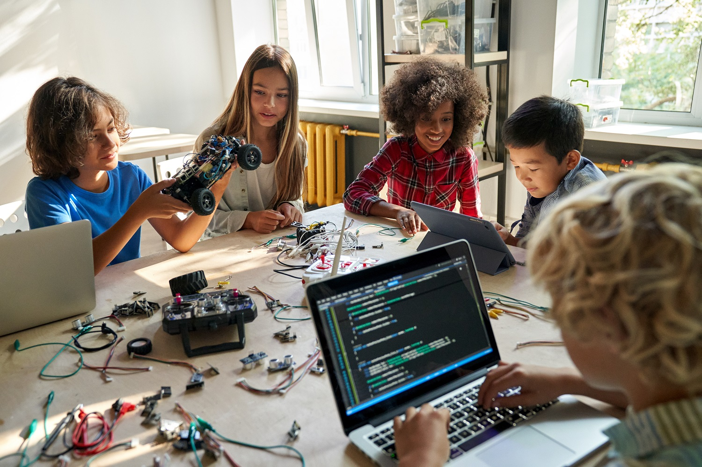

Wawasan hari ini untuk masa depanmu
Lebih Cerah
artikel singkat tentang edukasi


artikel singkat tentang edukasi

Perkembangan teknologi terus membawa perubahan dalam kehidupan manusia, termasuk dalam bidang pendidikan.
Salah satu teknologi yang saat ini banyak dibicarakan adalah Artificial Intelligence (AI) atau kecerdasan buatan.
Teknologi ini memungkinkan komputer melakukan berbagai tugas yang biasanya membutuhkan kemampuan manusia,
seperti memahami pertanyaan, mengolah informasi, mengenali pola, dan membantu menyelesaikan masalah.
Saat ini, AI mulai digunakan dalam berbagai kegiatan sehari-hari. Pelajar dapat memanfaatkannya untuk mencari penjelasan mengenai materi pelajaran, memahami konsep yang sulit, memperbaiki tulisan, hingga mendapatkan ide untuk mengerjakan proyek. Di dunia kerja, AI juga digunakan untuk membantu mengolah data, menyusun dokumen, dan mempercepat proses pekerjaan tertentu.
Meskipun menawarkan banyak kemudahan, perkembangan AI juga menimbulkan sejumlah pertanyaan. Apakah AI akan membuat manusia semakin mudah belajar? Apakah teknologi ini dapat menggantikan pekerjaan manusia? Dan bagaimana generasi muda harus mempersiapkan diri untuk menghadapi perubahan tersebut?
Untuk menjawab pertanyaan itu, kita perlu memahami manfaat, risiko, serta cara menggunakan AI secara bijak.
1.Pengertian Kecerdasan Buatan
Kecerdasan buatan atau Artificial Intelligence merupakan teknologi yang memungkinkan sistem komputer menjalankan tugas yang membutuhkan kemampuan seperti pengenalan pola, pemrosesan bahasa, dan pengambilan keputusan berdasarkan data.
Contoh penggunaan AI dapat ditemukan pada chatbot, penerjemah otomatis, rekomendasi video, asisten virtual, dan aplikasi pembelajaran.
Beberapa sistem AI juga mampu membantu pengguna menulis kode program, merangkum dokumen, atau menjelaskan konsep tertentu.
Namun, AI bukan berarti memiliki pemahaman dan penilaian yang selalu sama dengan manusia.
Jawaban yang dihasilkan bisa keliru, tidak lengkap, atau menggunakan informasi yang sudah tidak sesuai.
Oleh karena itu, hasil AI tetap perlu diperiksa sebelum dipercaya atau digunakan.
Memahami keterbatasan ini merupakan langkah awal agar seseorang tidak hanya menjadi pengguna teknologi, tetapi juga mampu menilai hasil yang diberikan oleh teknologi tersebut
2.Dampak AI dalam Dunia Pendidikan
Salah satu bidang yang mengalami perubahan akibat perkembangan AI adalah pendidikan.Teknologi ini dapat membantu siswa memperoleh penjelasan tambahan di luar kegiatan belajar di kelas.
-Membantu memahami materi pelajaran
Ketika siswa mengalami kesulitan memahami suatu materi, AI dapat diminta menjelaskan kembali menggunakan bahasa yang lebih sederhana. Misalnya, siswa yang sedang mempelajari pemrograman PHP dapat meminta contoh penggunaan fungsi, perulangan, atau array.
Penjelasan tambahan tersebut dapat membantu siswa memahami konsep sebelum mencoba mengerjakan latihan sendiri.
Akan tetapi, siswa tetap perlu membaca materi, menulis kode, dan mencoba menyelesaikan masalah tanpa selalu bergantung pada jawaban AI.
-Mendukung proses belajar mandiri
Tidak semua siswa memahami materi dengan kecepatan yang sama. Ada yang membutuhkan contoh lebih banyak, sementara yang lain lebih mudah memahami melalui latihan.
AI dapat digunakan untuk menghasilkan pertanyaan latihan, memberikan contoh tambahan, atau menjelaskan kesalahan pada suatu jawaban. Dengan cara ini, siswa memiliki kesempatan untuk mengulang materi sesuai kebutuhannya.
Meskipun demikian, belajar mandiri tetap membutuhkan kedisiplinan. Teknologi hanya membantu menyediakan informasi, sedangkan usaha untuk memahami dan mempraktikkan materi tetap berasal dari siswa itu sendiri
3.Keterampilan yang Perlu Dipersiapkan Generasi Muda
Menghadapi perkembangan AI membutuhkan kombinasi antara kemampuan teknis dan kemampuan manusia.Kemampuan berpikir kritisBerpikir kritis berarti tidak langsung menerima informasi sebagai kebenaran. Seseorang perlu memeriksa bukti, membandingkan sumber, mempertimbangkan kemungkinan kesalahan, dan menarik kesimpulan berdasarkan alasan yang masuk akal.Kemampuan ini semakin penting ketika informasi dapat dihasilkan dengan cepat oleh berbagai teknologi.
-Kemampuan memecahkan masalah
Dalam dunia pendidikan dan pekerjaan, masalah sering kali tidak memiliki satu jawaban yang langsung terlihat. Seseorang perlu memahami situasi, menentukan penyebab, mencoba solusi, lalu mengevaluasi hasilnya.
Bagi pelajar yang mempelajari pemrograman, keterampilan ini dapat dilatih melalui proyek sederhana, seperti membuat halaman profil, formulir pendaftaran, atau sistem pengelolaan data.
-Literasi digital dan AI
Literasi digital bukan hanya kemampuan menggunakan komputer atau aplikasi. Kemampuan ini juga mencakup pemahaman mengenai keamanan, privasi, keakuratan informasi, dan tanggung jawab dalam menggunakan teknologi.
Literasi AI menambahkan pemahaman tentang kemampuan dan keterbatasan sistem AI, sehingga pengguna dapat menentukan kapan teknologi tersebut bermanfaat dan kapan hasilnya perlu diragukan.
-Komunikasi dan kerja sama
Kemampuan menjelaskan ide, mendengarkan pendapat orang lain, menerima masukan, dan bekerja dalam tim tetap penting dalam banyak lingkungan pendidikan dan pekerjaan.
Teknologi dapat membantu menyelesaikan tugas tertentu, tetapi manusia masih perlu berkoordinasi, memahami kebutuhan orang lain, dan mengambil tanggung jawab atas keputusan yang dibuat.
-Kemampuan belajar secara berkelanjutan
Perkembangan teknologi membuat pengetahuan dan alat kerja terus berubah. Karena itu, kemampuan mempelajari hal baru menjadi bekal penting.
Pelajar dapat memulainya dengan membaca dokumentasi, mengikuti materi pembelajaran, mencoba proyek, dan mengevaluasi kesalahan. Kebiasaan belajar
secara bertahap akan lebih bermanfaat daripada sekadar mengikuti tren tanpa memahami dasarnya.
KESIMPULAN
Kecerdasan buatan membawa peluang sekaligus tantangan bagi pendidikan dan dunia kerja. Teknologi ini dapat membantu manusia memperoleh informasi, memahami materi, dan menyelesaikan tugas dengan lebih efisien. Namun, penggunaannya juga memiliki risiko, mulai dari ketergantungan, informasi yang keliru, hingga persoalan privasi dan kejujuran akademik.
AI tidak seharusnya dipandang hanya sebagai ancaman ataupun sebagai solusi untuk semua masalah. Manfaatnya bergantung pada tujuan, cara penggunaan, dan kemampuan manusia dalam mengevaluasi hasilnya.
Bagi generasi muda, langkah yang paling masuk akal adalah membangun pengetahuan dasar, melatih kemampuan berpikir kritis, mengembangkan keterampilan teknis, serta membiasakan diri belajar secara berkelanjutan.
Pada akhirnya, kemampuan menghadapi masa depan bukan hanya tentang siapa yang paling cepat menggunakan teknologi, melainkan siapa yang mampu memahami, menilai, dan memanfaatkannya secara bertanggung jawab.